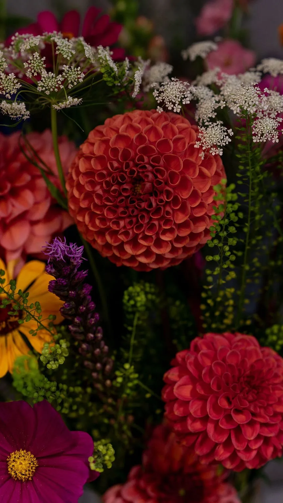
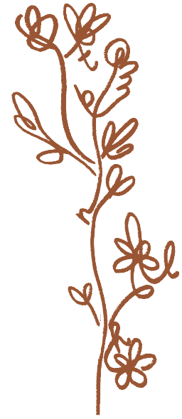

BloemBloemen vers of zijde
Van het bruidsboeket tot een boog waar jullie onder trouwen. Grote, losse stukken met veel karakter, nooit stijf.
- Bruidsboeket en corsages vers of in zijde
- Ceremonie, zaal en tafels op maat
- Bogen en grote installaties binnen en buiten
- Communie, doop, babyborrel, verjaardag elk feest
- Grafwerk en afscheid ook dat

Een zijden bruidsboeket blijft zoals het was. Laat je een vers boeket gewoon indrogen, dan kom je meestal terug van een kale reis.